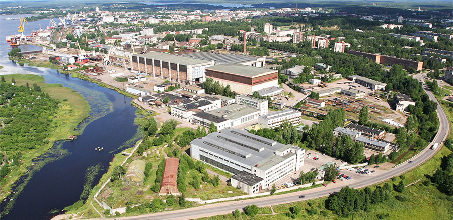

ПАО «Выборгский судостроительный завод» — одно из крупнейших судостроительных предприятий, расположенных в Северо-Западном регионе России. Верфь была основана в 1948 году. За 70 лет трудовой коллектив завода построил более 220 судов различного назначения, 9 морских буровых платформ и 105 модулей верхних строений платформ для разработки нефтегазовых месторождений.
Основным направлением деятельности верфи является строительство различных судов гражданского назначения: судов ледового класса, судов снабжения, ледоколов, рыболовных траулеров, а также буровых платформ для разработки морских шельфовых месторождений.
Специалисты предприятия имеют сертификаты ведущих мировых классификационных обществ: Lloyd’s Register of Shipping, Germanischer Lloyd, Bureau Veritas, RINA, Российского морского регистра судоходства.
Выборгский судостроительный завод является членом Общероссийского отраслевого объединения работодателей "Союз машиностроителей России", Межрегионального отраслевого некоммерческого Объединения промышленников и предпринимателей (работодателей) «Ассоциация судостроителей Санкт-Петербурга и Ленинградской области». С 2012 года ПАО «ВСЗ» входит в состав АО «Объединённая судостроительная корпорация».